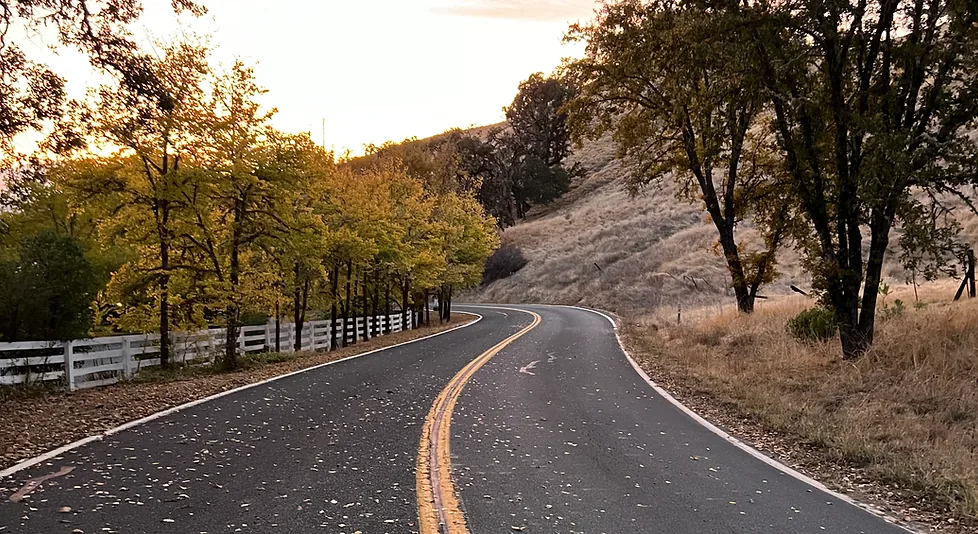
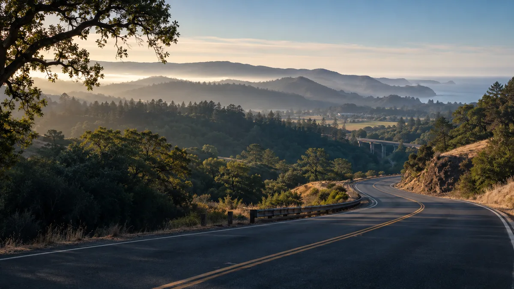
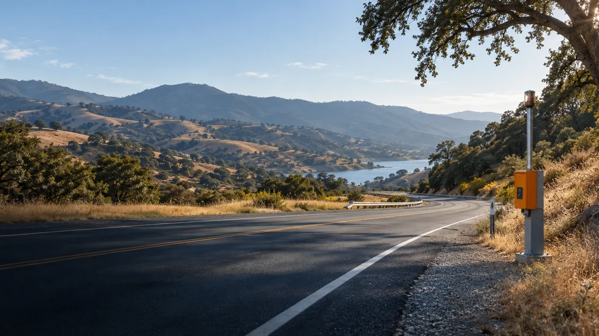
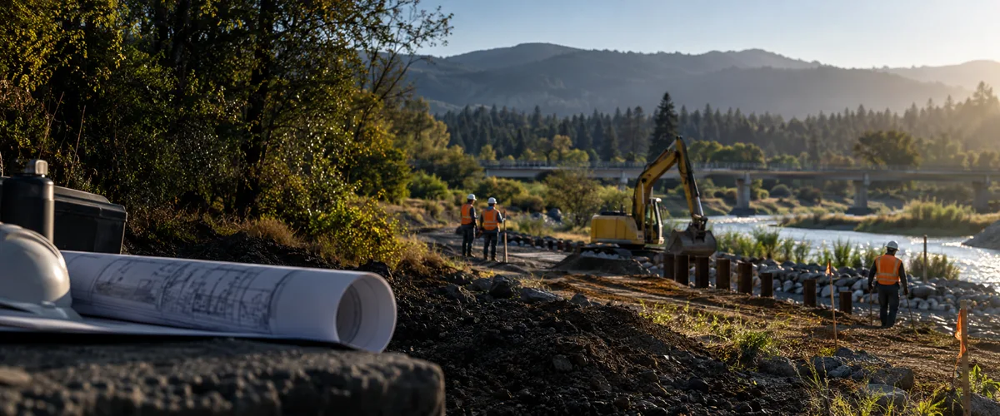
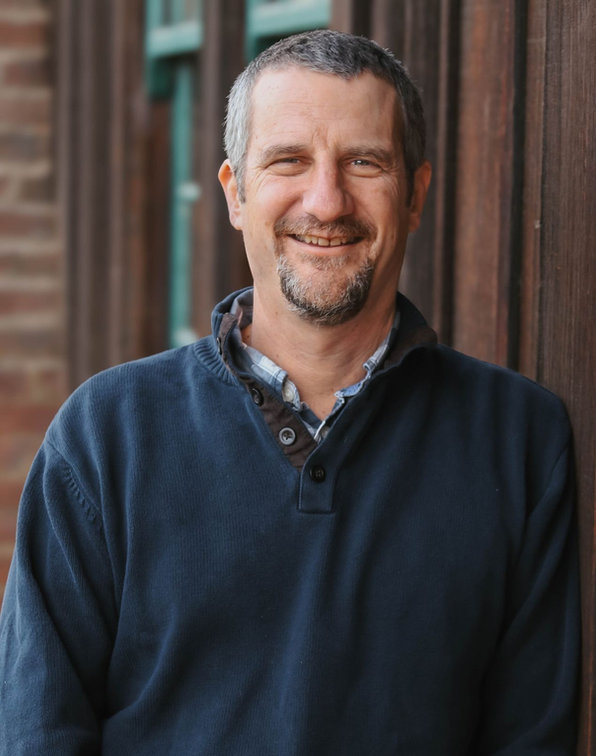
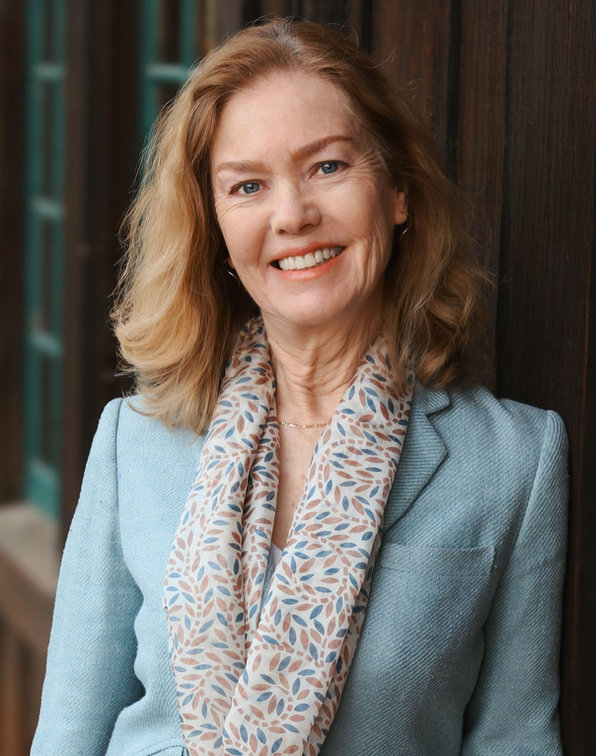
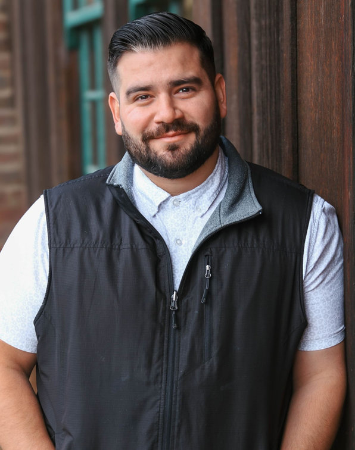

Mendocino + Lake Counties
Making regional government work, locally.
For more than two decades, Dow & Associates has supplied the people, planning, and operational continuity rural agencies need to serve their communities.
A different kind of consulting firm
We do not hand over a plan and disappear.
Dow & Associates provides services to regional government agencies in transportation planning, program implementation, housing needs, economic development, and energy efficiency. For the past two and a half decades, the firm has exclusively focused on staffing regional planning agencies and Service Authorities for Freeway Emergencies.
Through long-term staffing contracts with the Mendocino Council of Governments, Lake Area Planning Council, Mendocino SAFE, and Lake SAFE, the team carries out regional agency responsibilities ranging from administration and fiscal oversight to program and project implementation.
Originally founded by Phillip Dow, the firm began with transportation planning and administration. Its work has grown to include fiscal oversight, housing, economic development, project and program implementation, climate, and energy efficiency.

Mendocino Council of GovernmentsMCOG ↗Lake Area Planning CouncilLake APC ↗
Motorist aid administrationMendocino + Lake SAFEWhat the work includes
From public mandate to practical delivery.
Planning and fundingExplore
Long-range transportation plan development
Transportation funding programming
Transit funding allocation
Regional Housing Needs Allocation preparation
Administration and oversightExplore
Transportation Development Act administration and oversight
Budget development and management
Annual work plan preparation and implementation
Board and committee meeting management and preparation

Programs and implementationExplore
Grant writing and management
Funding program management
Program and project implementation
Northern Rural Energy Network program implementation
Connection and communicationExplore
Motorist aid call box administration and maintenance
Agency website management
Media communications
Economic development support
A compact team can become the operating capacity a rural region needs.
Twenty-plus years of continuous regional serviceThe people behind the work
Local knowledge. Direct responsibility.



Work with us
Small office.
Meaningful reach.
Dow & Associates offers a friendly and welcoming Ukiah-area workplace with health, dental and vision insurance, paid leave and holidays, and retirement benefits. Dedicated employees help serve Lake and Mendocino counties.
Deputy Director / Fiscal ManagerOpen role
The Deputy Director/Fiscal Manager plans, develops, directs, and supervises administrative and accounting functions, including administrative policies and procedures, procurement, and records management.
Responsibilities include agency budgets; revenue tracking and forecasting; fiscal control, monitoring, and reporting; disbursements and cost accounting; fiscal and performance audits; contracts; boards and committees; state and federal compliance; transit claimant oversight; website management and publicity; and special projects. The work is performed primarily under the Mendocino Council of Governments staffing contract.
Send a resume, cover letter, and references →Energy Program SpecialistOpen role
The Energy Program Specialist implements energy efficiency and sustainability initiatives, including public and residential equity programs, rebate and resource programs, energy assessments, workforce training, and codes and standards support.
This is a full-time Ukiah position with a hybrid-work option, local travel, and occasional weekend and evening outreach. Qualifications include education or experience equivalent to a college degree or two years in a closely related field, plus knowledge of energy technologies, energy management, usage, efficiency and conservation, and local and state energy policy and goals.
View the Indeed listing →Apply by email →
Contact